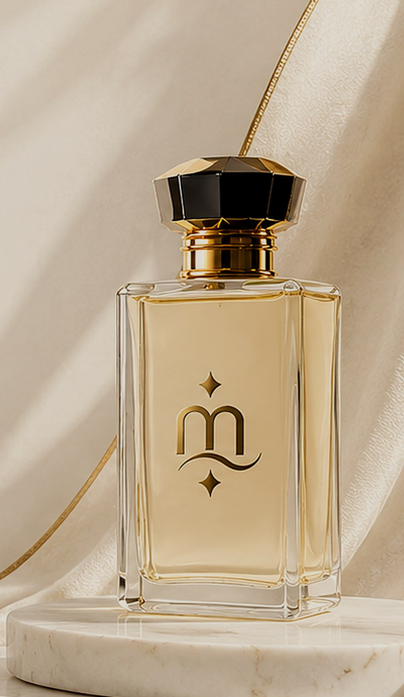

Attar. Worn, not sprayed.
Come to the counter.
The house answers on WhatsApp.
A message, and an answer from a person. Nothing else.

Attar. Worn, not sprayed.
The house answers on WhatsApp.
A message, and an answer from a person. Nothing else.
The house
An attar house in Lahore.
Oil, never alcohol. It is worn on the skin rather than sprayed into the air. It settles, warms, and stays.
Lahore, at dusk

The vessel

The light side
A scent that remains.
Not a fragrance yet. A name first.